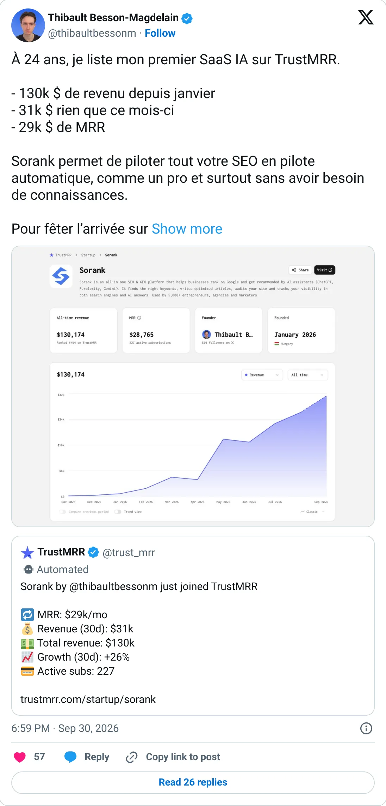
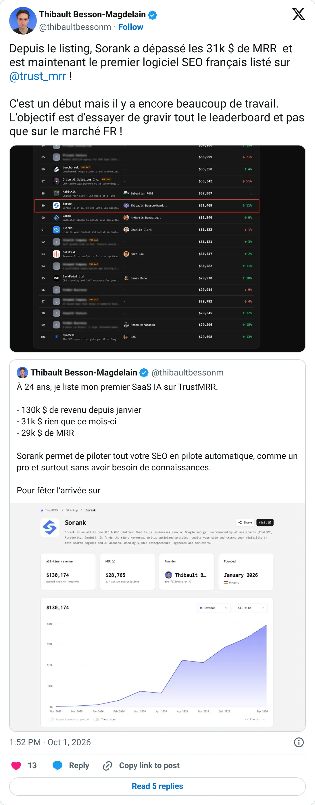

Not a pick
Sorank
The ledger looks real. It is not one of the clearer things to start next.
$29.7K MRR
Should you build this
The money looks real, and it is still not a recommendation to start a copy. Sorank is listed at $29.7K MRR, taken from TrustMRR on 2026-10-08. The chart has 8 recorded months, enough to show a spike or a collapse, and the latest point agrees with the headline. This is current billing on a connected Stripe, Paddle, Polar, or Dodo account. It does not certify margins, churn, or that every tweet around it is careful.
Cited from the captured posts, shown below: the earliest captured post (Sep 30, 2026) is the source for “Founder: "At 24 I'm listing my first AI SaaS: $130K revenue since January, $31K this month, $29K MRR"”; the latest milestone (Oct 1, 2026) is the source for “Founder: passed $31K MRR, the first French SEO software on TrustMRR”.
Posts this is based on

Founder: "At 24 I'm listing my first AI SaaS: $130K revenue since January, $31K this month, $29K MRR"
Open on X

Founder: passed $31K MRR, the first French SEO software on TrustMRR
Open on X
What the product is
All-in-one SEO and GEO platform that grows organic traffic from Google and AI assistants on autopilot. Built by a 24-year-old French founder (listed in Hungary) and launched Jan 2026.
Public trail
- $393Verified revenue in Dec 2025 (first month tracked) source
- $881Verified revenue in Jan 2026 source
- $6KVerified revenue in Mar 2026 source
- $5.3KVerified revenue in Apr 2026 source
- $17.8KVerified revenue in May 2026 source
- $16.9KVerified revenue in Jun 2026 source
- $26.2KVerified revenue in Aug 2026 source
- $32.3KVerified revenue in Sep 2026 (latest full month) source
- •Founder: "At 24 I'm listing my first AI SaaS: $130K revenue since January, $31K this month, $29K MRR" source
- •Founder: passed $31K MRR, the first French SEO software on TrustMRR source